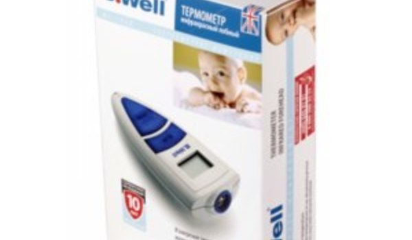

Термометр лобный инфракрасный WF-2000 для детей
- 

Термометр лобный инфракрасный WF-2000 для детей
Лобный инфракрасный термометр B.Well WF-2000 абсолютно точно и безболезненно определяет температуру тела. Прибор идеально подходит для измерения температуры тела у детей, даже когда они спят.
Новая технология измерения температуры в лобной зоне с помощью инфракрасного датчика обеспечивает более высокую надежность и, к тому же, увеличивает срок службы прибора. Термометр B.Well WF-2000 имеет большой жидкокристаллический дисплей, позволяющий легко считывать показатели температуры.
Звуковой сигнал подается после завершения измерения температуры и после автоматического выключения прибора, если он не используется в течение 1 минуты, что позволяет продлить срок службы батареек. Прибор прост в использовании и позволяет также измерять температуру воздуха, предметов и жидкости.
Температура измеряется в градусах Цельсия (C°) и Фаренгейта (F°). Прибор хранит в памяти последние 25 измерений температуры для отслеживания динамики изменения состояния.
Цена по запросу